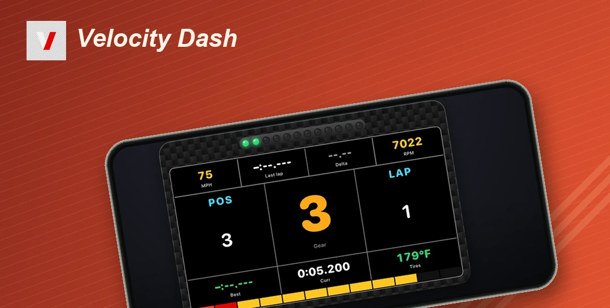
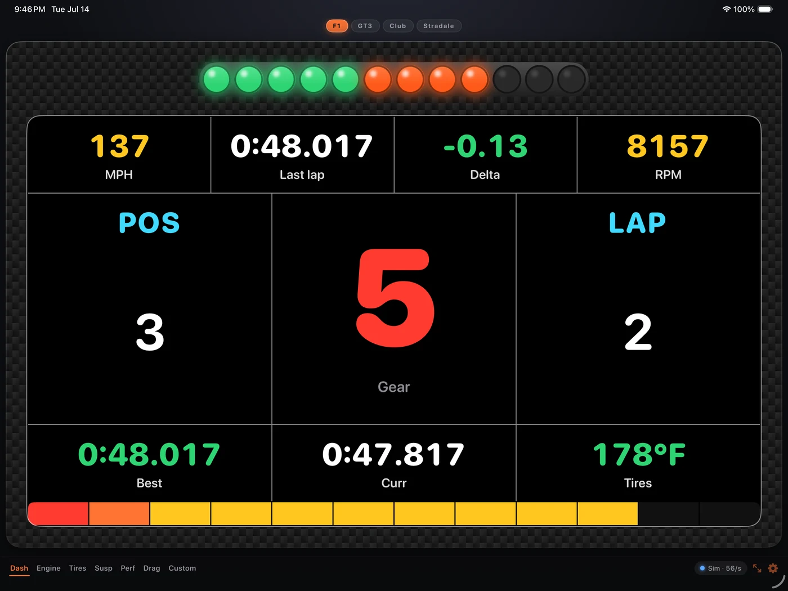
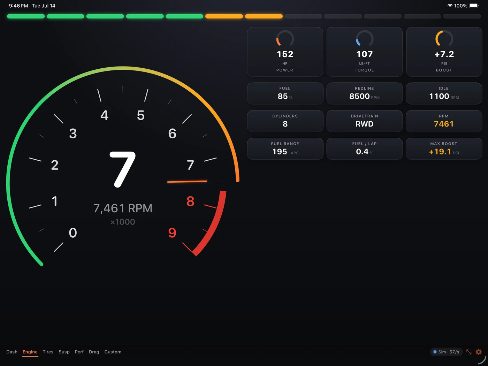

Velocity Dash
A live dashboard and lap-analysis tool for Forza’s 60 Hz telemetry stream.

During a lap
Sim racing got me interested in telemetry. I built Velocity Dash to turn Forza Data Out packets, arriving over UDP at 60 Hz, into instruments I can read while driving. The native iOS app shows gear, RPM, shift lights, tire temperatures, and lap data.
After the session
The app records sessions on device in the background. I can line up traces from two laps, see where the time delta changes, and find that corner on a track heatmap. I also built CSV export and a separate timing system for drag racing.
Inside the app



